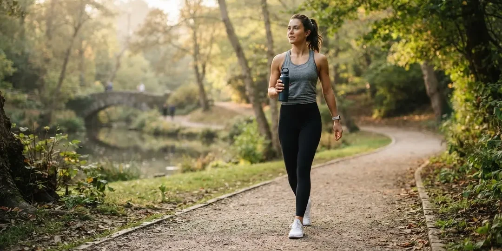
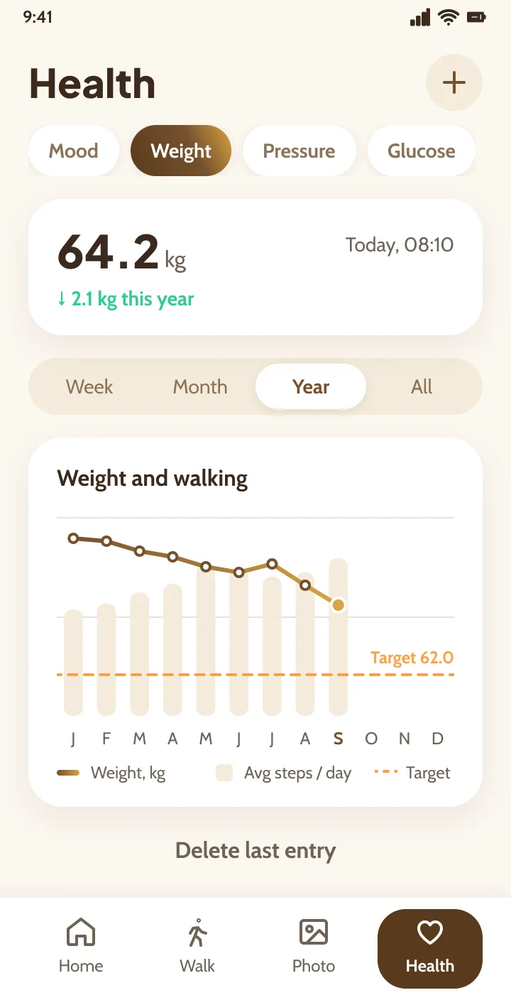
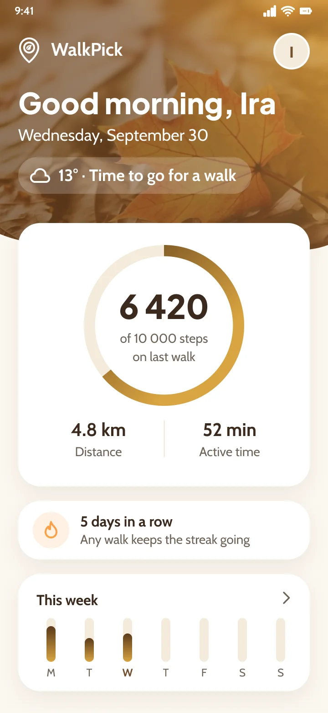

Step. Snap. See.
You walk. WalkPick remembers.
The route you took, what you photographed on the way and how you felt when you got home.
Start · 0 km
This page is one short walk: 5 kilometres and 5 stops. Before you set out, WalkPick asks just one thing:
How do you feel?
Pick an answer and the route takes its colour. Notice how your mood shifts on the way: at the end WalkPick asks about it again.
Walk
1 km
Just go. Your phone does the counting.
Tap Start, lock the phone and put it in your pocket. While you walk, WalkPick records the route, distance, time and steps. Decided to sit on a bench or go part of the way by car? Pause the walk on your phone.

Photo
2 km
“What is that flower?”
Point the camera at a plant, a bird or a building. Then take the photo. WalkPick tells you its name and marks the spot where you found it.
-

Red clover
Trifolium pratense
-

European robin
Erithacus rubecula
-

Chapel in the garden
Named by you
Health
3 km
What a walk does for you
-

Mood
You set out in one mood. You come back in a better one.
-

Weight
Kilos leave quietly, step by step. Every walk counts, even a short one.
-

Heart
Your heart likes it when you move. Even an easy pace does it good.
-

Energy
Half an hour outside wakes you up better than a second cup of coffee.
Check it on your own chart.
If you find it useful, log your mood and weight, and see how regular walks relate to them.
WalkPick is a diary, not a medical device. It does not diagnose or treat.



Results
4 km
Back home, see how far you went.
Steps, distance and time of your last walk, your streak and the whole week on the app's home screen.
- steps
- 6,420
- km
- 4.8
- minutes
- 52
Questions
5 km
What people ask on the way.

Stop · 5 km
How do you feel now?
Pick an answer and the route will keep both colours: the mood you left with and the mood you came back with.
You took this walk on a screen. Take the next one outside.
- km
- 5
- minutes
- 60
- steps
- 6,540
- finds
- 3